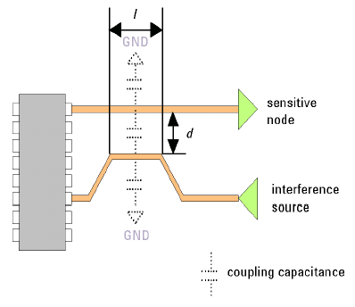

Crosstalk
If two signal lines are placed in parallel on a printed circuit board - one carrying a weak but precise signal and the other carrying a strong signal - the strong signal may couple to the weak signal, causing level change and jitter. This effect is called "crosstalk".
Coupling of the interference source to the sensitive node can be modeled as capacitive coupling as illustrated in the figure below.

To minimize signals transmitted by the interference source, follow these guidelines:
- Do not place traces carrying high frequency signals in parallel. This is especially true for traces carrying analog signals.
- If possible, use coaxial cable to conduct sensitive signals, for example, signals on which you will be performing signal to noise ratio (SNR) measurements, jitter measurements, and so on.
- Increase the distance d between traces. (See the figure above.)
- Decrease the length of parallel traces l by bending traces. (See the figure above.)
- Use shielding techniques. For example, route ground traces between sensitive traces (taking into account the increase in the total capacitive load on the traces).
- Use maximum allowable spacing between signal lines.
- Minimize the spacing between the signal line and ground.
- Run a ground strip between two signal strip lines.
- Distribute signal lines through multiple board layers.
- Terminate strip lines with the characteristic impedance.